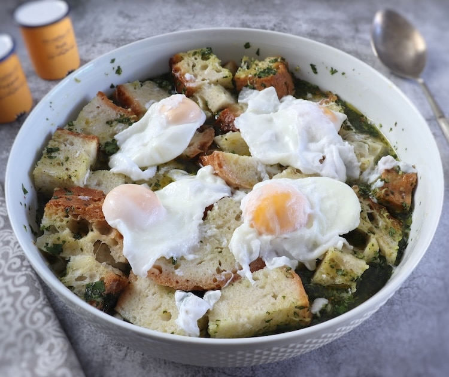

Açorda de Alho

Açorda
Acorda é um prato tradicional da culinária portuguesa, especialmente popular nas regiões do Alentejo e do Algarve. É uma sopa espessa e reconfortante, feita à base de pão, alho, coentros e água ou caldo.
A receita pode variar de acordo com a região e os ingredientes disponíveis, mas a base é sempre o pão, que é geralmente pão duro ou amanhecido.
Acorda pode ser enriquecida com outros ingredientes como ovos escalfados, peixe (como bacalhau) ou carne (como frango ou coelho), tornando-a uma refeição completa.
É um prato simples, mas cheio de sabor e tradição.
Ingredientes
- 4 fatias de pão (preferencialmente amanhecido)
- 4 dentes de alho
- 1 molho de coentros frescos
- 1 litro de água ou caldo de galinha
- Sal e pimenta a gosto
- Azeite a gosto
Passos
- Num tacho, coloque a água ou caldo a aquecer.
- Enquanto isso, corte o pão em pedaços pequenos.
- Quando a água estiver quente, adicione os dentes de alho picados e o pão. Deixe cozinhar por alguns minutos.
- Adicione os coentros picados e tempere com sal e pimenta.
- Se desejar, adicione um fio de azeite para dar mais sabor.
- Deixe cozinhar até que o pão esteja bem desfeito e a sopa esteja espessa.
- Sirva quente, podendo adicionar ovos escalfados ou outros ingredientes a gosto.
Voltar ao Início